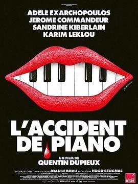

6.3
钢琴事故
L’Accident de piano
2025
法国
评分 6.3
导演:
昆汀·杜皮约
演员:
阿黛尔·艾克萨勒霍布洛斯 / 杰罗姆·芒德尔 / 桑德琳娜·基贝兰 / 卡里姆·莱克路
类型:
喜剧
剧情简介
玛佳莉（阿黛尔·艾克萨勒霍布洛斯 饰）是一位在网络上直播极限体验的知名网红。她天生无法感知疼痛，电击、铁锤、热水浇灌都无法令她退却，这种“无痛”成为她吸引粉丝、登上潮流巅峰的资本。随着点击量与赞助不断攀升，她决定在高山别墅拍摄最新一条壮观片段：一架钢琴从高处坠落。事发之夜，钢琴坠地，一切看似精密安排却在瞬间崩塌。玛佳莉必须暂别喧嚣，隐居于雪域深处，与长期助手帕特里克（杰罗姆·芒德尔 饰）共处孤寂中。就在她以为可以修整时，一位记者西蒙娜（桑德琳娜·基贝兰 饰）闯入这片宁静，对她过往的“创伤直播”提出质疑，并逐渐通过黑幕逼迫她曝露真相。玛佳莉的控制力面临崩溃：粉丝的狂热、助理的忠诚、记者的审问，一层层剥开她光鲜下的脆弱。影片用冷峻的镜头捕捉网络时代的荒诞：镜头里是破碎的钢琴键、无法感觉疼痛的身体、镜头前笑靥如花但心底却空虚。玛佳莉固然无惧伤害，却害怕被遗忘；她靠“受伤”成名，却在静默中变得无法被看见。导演昆汀·杜皮约以荒诞喜剧的形式，揭露了“流量为王”时代的扭曲价值：当疼痛变得无效，真正受伤的反而是灵魂。